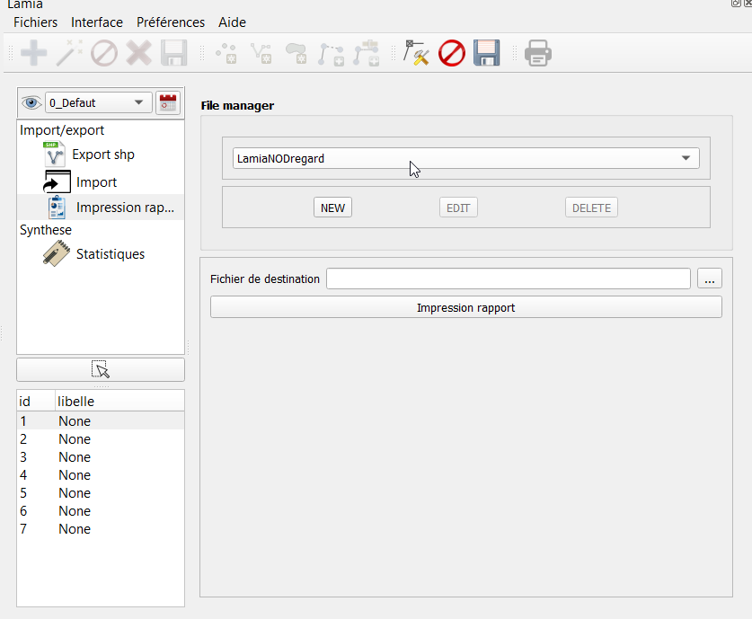
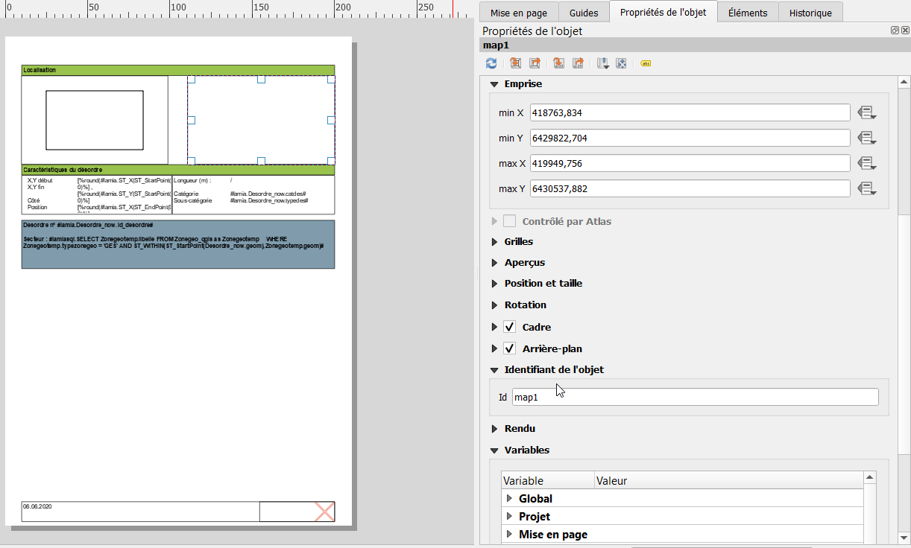

Impression de rapports¶
Utilisation du module¶
On accède à ce module allant dans « Interface / Post traitement » et en selectionnant l’onglet « Impression rapport ».
Il suffit de :
Selectionner le type de rapport voulu dans le menu déroulant
Selectionner la zone géographique pour laquelle on souhaite les rapports (on peut en selectionner plusieurs) dans la zone en bas à gauche
Choisir l’emplacement du fichier de destination (pdf).
Cliquer sur Impression rapport
Création/Modification de rapports¶
Présentation / Fonctionnement¶
Les fichiers de configuration d’impression de rapport sont au nobre de deux : * le fichier .qpt comprenant le modèle de mise en page qgis * un fichier .txt comprenant la configuration de l’impression
Ces fichiers sont situés :
soit dans le répertoire du plugin Lamia/libslamia/lamiareport/[nom_du_type_de_la_base_de_donnees_choisie] pour les configurations d’impression standard,
soit dans le répertoire créé lors de l’initialisation du projet, et ensuite au chemin suivant : /config/rapporttools pour les configurations d’impression spécifiques au projet.
NB : le répertoire des plugins est dans C:\Users\[votre_login]\AppData\Roaming\QGIS\QGIS3\profiles\[votre_nom_de_profil_qgis]\python\plugins pour QGIS3.
Ainsi, pour créer un nouveau type de rapport (de nom rapport_toto p.ex), il faut créer :
un fichier rapport_toto.txt (la configuration).
un fichier rapport_toto.qpt (la mise en page qgis)
Création du fichier rapport_toto.txt¶
IL s’agit du fichier de configuration de l’impression rapport. La trame de ce fichier est créé automatiquement lors du click sur le bouton « nouveau » du gestionnaire de fichier.
Les différentes lignes à renseigner sont indiquées ci-après.
###atlaslayersql
mettre à la suite la requete sql qui va êre utilisée pour créer la table à parcourir par l’atlas. Les noms des tables utilisées ici doivent correspondre au nom des tables utilisée dans le composeur avec #lamia…
ex : SELECT edge_now.* FROM edge_now
###atlaslayerid
donner le champ contenant l’id utilisé lors du parcours de la table par l’atlas
ex : id_edge
###spatial
Indiquer ici si la table est spatiale ou pas. Prend la valeur True ou False
###ordering
indique la méthode d’ordonnancement des éléments parcourus par l’atlas. Si rien n’est mis, ça suit l’ordre des id.
Peut prendre la valeur autoalongpath. Dans ce cas, les ids sont classés selon le parcours de l’edge la plus proche.
###atlaslayerstyle
nom du fichier .qml (style qgis) pour le style de la couche parcourue par l’atlas.
###atlasdrivemap
Fourni les caractéristiques des cartes qui suivent la table parcourue par l’atlas.
Ex :
#itemname; minscale; typescale; layers
map1; 2500; Predefined ;[“atlaslayer”, “Infralineaire”, “scan25”]
Dans ce cas, la map ayant pour identifiant map1 dans le .qpt sera au 1/2500°, avec une échelle de type Predefined (ne change pas selon l’objet), et les couches affichées seront l’atlaslayer (la couche constitue avec la requete sql de ###atlaslayersql), la couche Infralineaire telle qu’elle est stylée dans qgis au moment de l’édition du rapport, et la couche scan25 qui est un raster chargé dans Lamia avec pour attribut « scan25 de référence ». On peut également donner indiquer le nom de couches chargées dans les fonds de plans Lamia.
On peut mettre autant de map que l’on veut.
###generalmap
Fourni les caractéristiques des cartes générales (ne bouge pas en fonction de l’objet). Même principe que pour ###atlasdrivemap
Ex :
#itemname; minscale; typescale; layers
map0 ; ; ; [“Infralineaire”, “ortho”]
###images
On met ici les identifiants des images du composeur, avec un mot clé à la suite.
Ex :
#itemname ; type
photo1;Equipement_now.photo1
ici , l’image avec pour identifiant « photo1 » sera rempli avec la première photo liée de l’équipement en cours de parcours par l’atlas.
La liste des mots clés prédéfinis sont :
[nom_table].photo[indexphoto] : affiche la photo n°[indexphoto] associée à la table nom_table
[nom_table].croquis[indexcroquis] : affiche le croquis n°[indexcroquis] associée à la table nom_table
[nom_table].ressource[indexressource] : affiche la ressource dont l’id est stockée dans le champ « lid_resource_[indexressource] » de la table [nom table]
Des mots clés particuliers peuvent être employés. Dans ce cas il faut développer la fonction python qui permet de générer l’image/le code html voulu(e) dans le fichier Lamia/libslamia/lamiareport/[nom_du_type_de_la_base_de_donnees_choisie]/lamiareportworktypefunc.py (Cf. exemples dans le code Lamia)
###childprint
Si on veut rajouter des composeurs à la suite de ce composeur, indiquer ici le nom du composeur à aller chercher.
Ex : #confname; linkcolumn; optionsql
Desordres_observation; Observation_now.lid_desordre ; ORDER BY Observation_now.datetimeobservation DESC
Exemple complet de fichier de configuration :
###atlaslayersql
WITH Gestionnaire AS (SELECT Intervenant.societe, Intervenant.nom , Tcobjetintervenant.lid_objet
FROM Tcobjetintervenant INNER JOIN Intervenant ON Tcobjetintervenant.lid_intervenant = Intervenant.id_intervenant WHERE Tcobjetintervenant.fonction = 'GES' )
SELECT Equipement_now.* , Gestionnaire.societe, Gestionnaire.nom
FROM Equipement_now
LEFT JOIN Gestionnaire ON Gestionnaire.lid_objet = Equipement_now.id_objet
WHERE ( Equipement_now.categorie = 'RHF' or Equipement_now.categorie = 'RHO' or Equipement_now.categorie = 'OUH')
###atlaslayerid
id_equipement
###spatial
True
###ordering
#type; constraint (qgis typo)
autoalongpath; "lid_descriptionsystem_1" IS NULL
###atlaslayerstyle
Equipementhydraulique_atlas.qml
###atlasdrivemap
#itemname; minscale; typescale; layers
map1; 2500; Predefined ;['atlaslayer', 'Infralineaire', 'scan25']
#map1; 2500; Predefined ;[]
###generalmap
#itemname; minscale; typescale; layers
map0 ; ; ; ['Infralineaire', 'ortho']
#map0 ; ; ; []
###images
#itemname ; type
photo1;Equipement_now.photo1
###childprint
#confname; linkcolumn; optionsql
Equipementhydraulique_annexe; Equipement_now.lid_descriptionsystem_1 ;
Création du fichier rapport_toto.qpt¶
1. Aller dans QGIS, ouvrir le composeur et faire Mise en page/enregistrer comme modèle… et l’enregistrer sous le nom de rapport_toto.qpt dans l’emplacement vu au paragraphe précédent. Toujours refaire cette procedure à a fin de chaque modif.
Renseignement des champs Lamia
créer une zone de texte
Dans cette zone de texte, si vous voulez ajouter un champ lamia, l’écrire comme ceci :
#lamia.[table_requetée_dans_le_sql_de_configuration].[nom du champ voulu]#
Par exemple, pour avoir le diamètre nominal d’une canalisation, faire #lamia.Infralineaire.diametrenominal#
Cette zone de texte sera remplacée par les champs voulus lors de l’impression du rapport.
NB : le nom des tables et des champs se trouvent dans le menu Aide/TAble et Champs du plugin Lamia.
Faire une requete sql
il est possible également d’afficher le résultat d’une requete sql comme ceci :
#lamiasql.SELECT champtruc FROM tableMachin#
où table machin a été définie dans la requete sql principale du fichier de configuration
associer une fonction qgis à un résultat lamia
il est possible d’utiliser une fonction qgis (round() par exemple) avec comme argument un champ lamia:
Round(#lamia.Infralineaire.diametrenominal#)
Ajouter des photos
il convient de créer une image
Ensuite, dans ses propriétés, nous lui donnerons un identifiant unque qui nous permettra de configurer ce qui apparaît dans l’image dans le fichier de configuration toto.txt.
Ajouter les cartes
Ajouter des cartes à la mise en page et penser à leur donner un identifiant qui sera utilisé dans le fichier de configuration.

{kind=link}
{kind=link}
{kind=link}
{kind=link}
{kind=link}